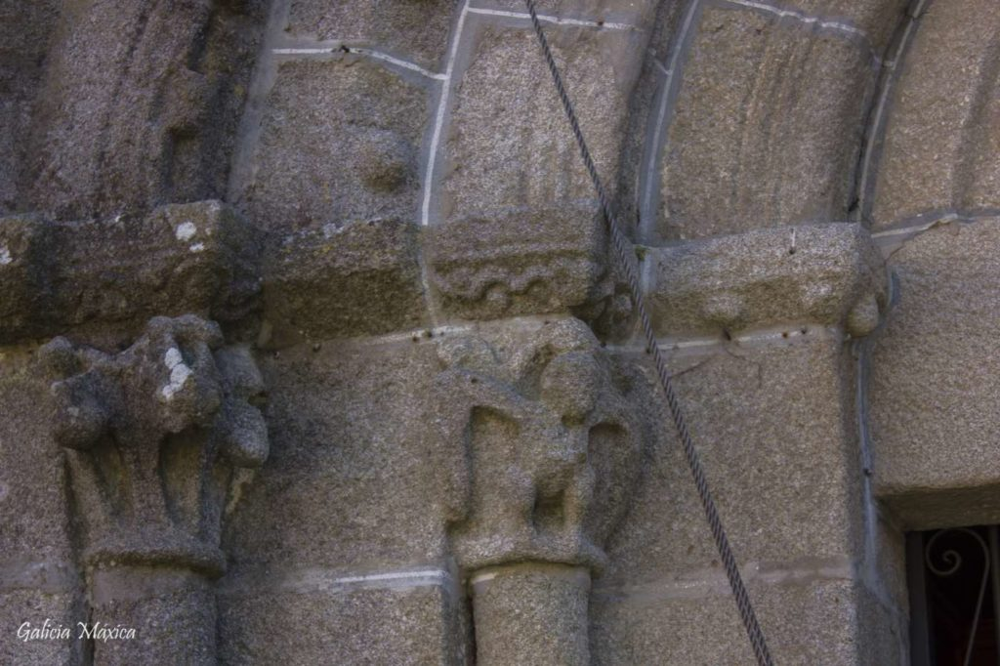
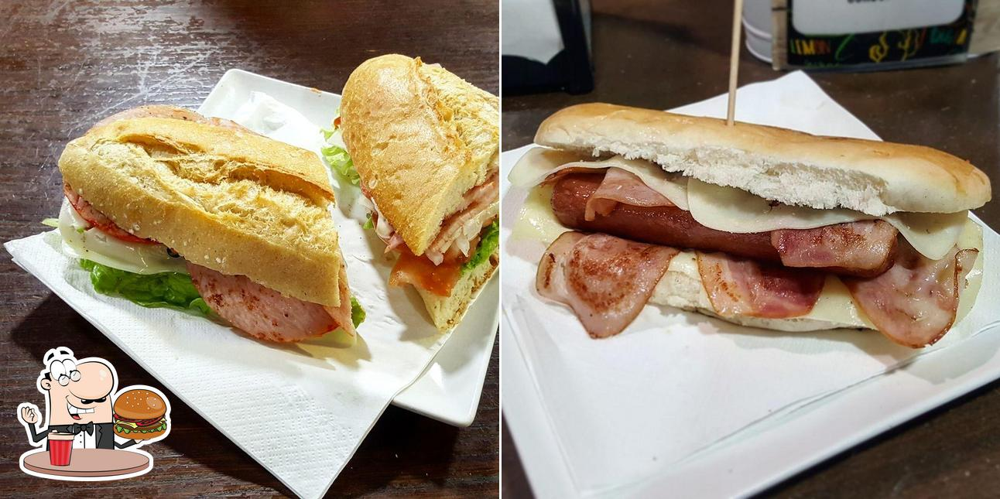
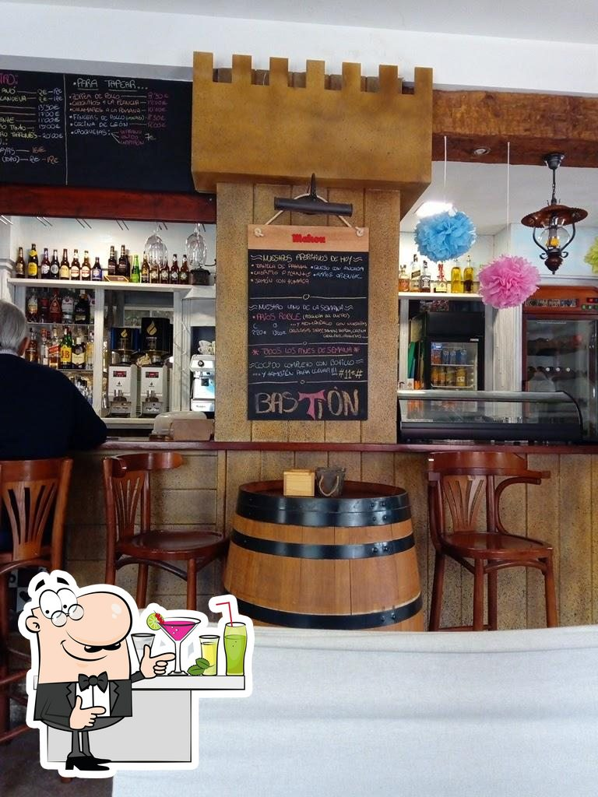

Las llamadas Pedras do Acordo, son los antecedentes centenarios de nuestros marcos contemporáneos. No es muy difícil localizar en el mapa de Galicia numerosos topónimos relacionados con estas Pedras do Acordo, piedras de acuerdos. Estas solían ser piedras o mojones que indicaban el punto exacto de la división de concellos e incluso de parroquias.

A 700 metros al este del castro de Pedra Moura, en Gondomar, se encuentra el barrio de Mosteiro, topónimo que ya nos habla de la existencia histórica de un antiguo monasterio. La mejor prueba de ello ha llegado hasta nuestros días en forma de un templo de origen románico que conserva buena parte de su estructura. Es la iglesia de Santa Baia de Donas, probablemente del tercer cuarto del siglo XII.
Bocatería en Gondomar. Amplia variedad de bocadillos, platos combinados, tapas, ensaladas, perritos, postres, sándwiches... Disponemos de servicio wifi para los clientes y terraza.
Aquí puedes degustar la auténtica cocina española. La receta del éxito de este restaurante está en sus singulares croquetas, su atrayente cocido y sus caseras tapas. Empieza tu comida con un sensacional vino o una deliciosa cerveza. Aquí puedes beber un bien valorado café.
